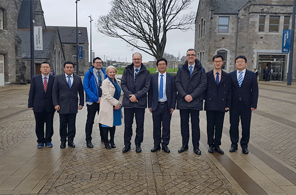
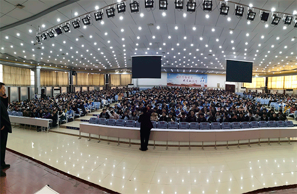
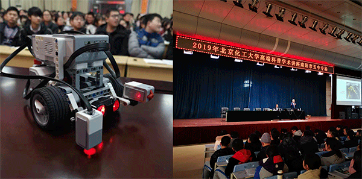
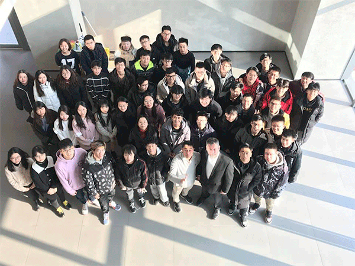

A TALE OF TWO CITIES: BUCT visits TU Dublin as TU Dublin promotes STEM in Beijing

When it comes to innovation in education, TU Dublin and Beijing University of Chemical Technology (BUCT) make a great team. On the 10th December 2019, while a senior delegation from BUCT visited The Grangegorman campus and met with TU Dublin President, Professor David FitzPatrick, on the other side of the globe a TU Dublin Computer Science team were in Beijing with BUCT promoting careers in STEM.
The visit to TU Dublin included detailed discussions about future collaborations in big data, student and staff exchange and innovation and tech transfer.

A delegation from BUCT visited Grangegorman to meet with TU Dublin President Prof David FitzPatrick
The BUCT delegation attending the meeting held in TU Dublin Grangegorman included:
-
Vice-Chancellor SONG Laixin, BUCT
-
WANG Yongsheng, Vice Dean, School of International Education, BUCT
-
HAN Yue, Vice Director, Department of Student Affairs, BUCT
-
CAO Hui, Vice Dean, School of Life Science and Technology, BUCT
Meanwhile the TU Dublin delegation included:
-
Professor David FitzPatrick, President, TU Dublin
-
Dr. Deirdre Lillis, Head of Computer Science, TU Dublin
-
Paul Maguire, Head of Innovation and Enterprise, TU Dublin
-
Ciaran O’Leary, Head of Learning Development, College of Sciences & Health, TU Dublin
-
Dr. Yupeng Liu, Lecturer, School of Computer Science, TU Dublin
Meanwhile in Beijing
Over the last four years TU Dublin has been providing online education in China though our Global Classroom (International online course for building software in distributed teams around the world), delivering jointly developed computer science undergraduate course material to Chinese students using its unique blended learning style of teaching. TU Dublin and BUCT have also embarked on a program of jointly delivered STEM talks to thousands of High-School students around China on AI and robotics.

TU Dublin professors giving a talk on STEM to packed house at the Beijing University of Chemical Technology
In a recent trip to China, Dr. Paul Doyle, Brian Gillespie and Zhiying Jiang (BUCT) have completed the assessment of 80 students through English using our co-delivered blended learning course. This month they travelled to the region of Henan to give exciting talks on the future of AI in the modern world whilst also providing robotic demonstrations to over 3,000 students using the EV3 robot system which TU Dublin also use for teaching undergraduate students in the School of Computer Science.
“The recent high-school talks are part of a novel recruitment strategy for BUCT and TU Dublin where we meet thousands of future college students and give them talks by two foreign lecturers from the School of Computer Science in TU Dublin with a BUCT professor”, said Dr. Doyle. These talks are English based STEM presentations which are most likely the only English-speaking presentations of this kind these students will see before deciding on their future university of choice.

The series of talks included a deep dive into AI and Robotics
Through the creation of strong ties with our partner TU Dublin has managed to create a strong English-speaking culture at BUCT for computer science, reinforced through our additional course delivery, Summer school work and regular contact with Chinese students looking for an international experience. “These students are the future of computer science in China as they will become the future researchers and teachers in this exciting field”, noted Mr. Jiang. TU Dublin has now become a key focus for students who wish to continue their studies in an English-speaking culture and that pipeline is being cultivated from High-Schools all the way up to graduate students.
The experience of working and developing computer science material as a partnership helps deepen the relationship between the two universities, providing a platform of trust and cooperation which will lead to further educational innovations which ultimately improves cultural awareness and tolerance between Ireland and China. Teaching practices, access to new technology and research will ensure that TU Dublin operates in a unique space in the Irish educational system, leading the way on practical, internationally based education.

TU Dublin Computer Science 2019.